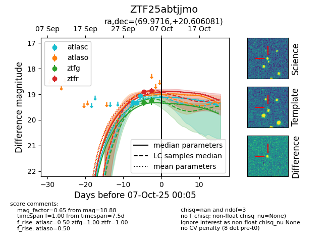
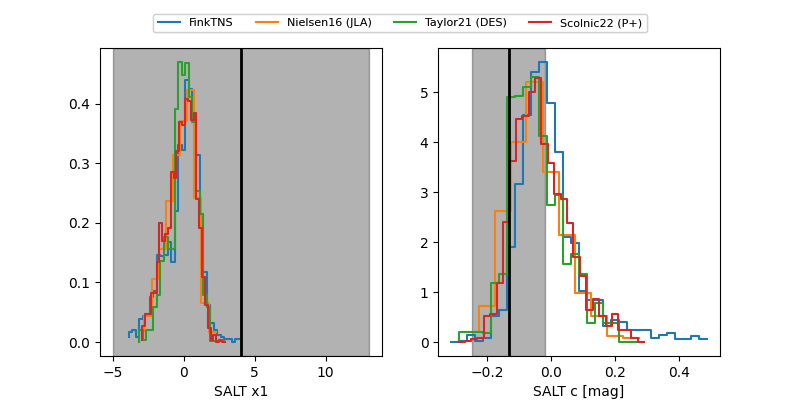

FINK: ZTF25abtjjmo
Lasair: ZTF25abtjjmo
ALeRCE: ZTF25abtjjmo
ZTF25abtjjmo (ztf,fink)
equatorial (ra, dec) = (69.9716,+20.60608)
galactic (l, b) = (178.1964,-16.96954)


last atlasc=19.06, atlaso=18.88, ztfg=19.25, ztfr=18.86
3 atlasc, 1 atlaso, 2 ztfg, 2 ztfr detections